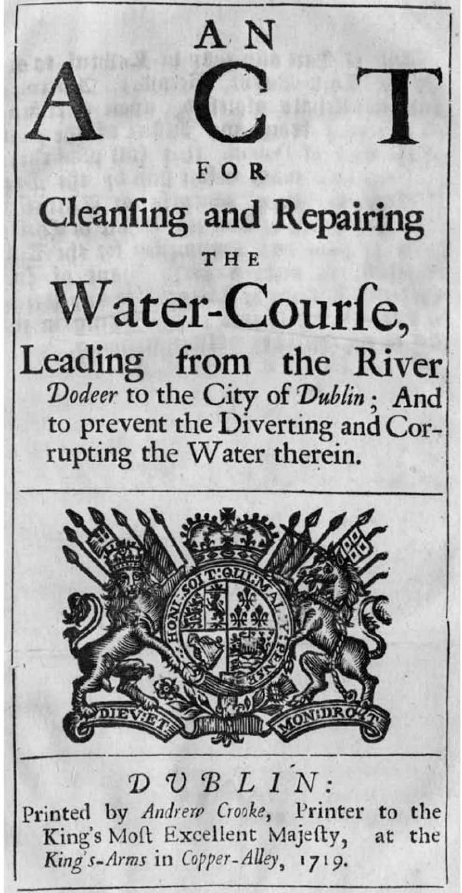

History · 1719
The 1719 Act
Parliament acts to clean up the city’s water.
The 1719 Act of Parliament
An Act of Parliament of 1719 describes the watercourse as “the chief supply of water not only for the inhabitants of the said city; but also for this majesties Castle of Dublin, and without which it would suffer exceeding great prejudice.”
The Act provided for cleaning and repairing the watercourse, because:
“…tuck mills, in which urine, soap and other unwolsome materials are made use of, and diers of linnen and woolen cloath and yarn, and skinners dip, wash, scour and cleanse great quantities of died linnen and woolen cloath, yarn and skins in the said water-course, by which the water is greatly corrupted, endangering the healths of the inhabitants of the said city.”Original 1719 spelling
Mills along the watercourse were also a problem, building dams and ponds that blocked the flow of water into the city.
Why Parliament stepped in
McEntee and Corcoran explain the background. In 1718 there were complaints about effluent from a tuck mill and a paper mill on the watercourse, and the mill owners argued that the Corporation had no power to stop them. The Act, “for cleaning and repairing the watercourse from the River Dodder to the City of Dublin, and to prevent the diverting and corrupting the Water therein”, gave the Corporation full control.
It also outlawed tuck mills and woollen mills on the Poddle and the City Watercourse. Mount Down Mill, near Kimmage, was one that had to change: it had been a woollen mill, and after the Act it was turned over to grinding flour.
The rules were not new. A Corporation order of 1538 had already said that “no manner person may wash foul clothes … and no man cast no corrupt thing in the same water, as blood of swyne or kyne … nor wash tripes or puddings there”, on pain of a fine of twelve pence.
After the Act
The Poddle and the City Watercourse remained the city’s only public water supply until 1745, when a pump on the Liffey at Islandbridge began to serve the north side. Water from the Grand Canal began to replace the Poddle at the City Basin in 1775 by most accounts (Fitzgerald says 1776). By then, William Handcock wrote, the citizens were lucky not to depend on it, “for it is so polluted by paper-making that it has become poisonous, and cattle and horses have died from drinking it.”
From the planning file
Facts from the flood scheme’s planning application and four local planning files.
